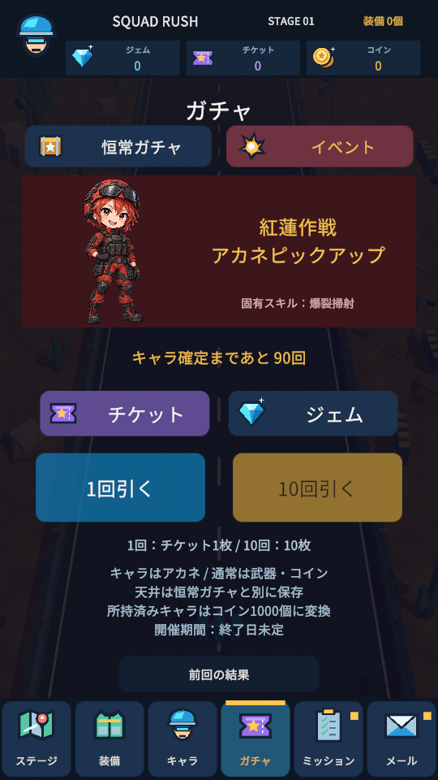
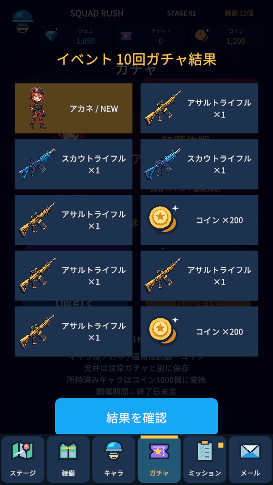
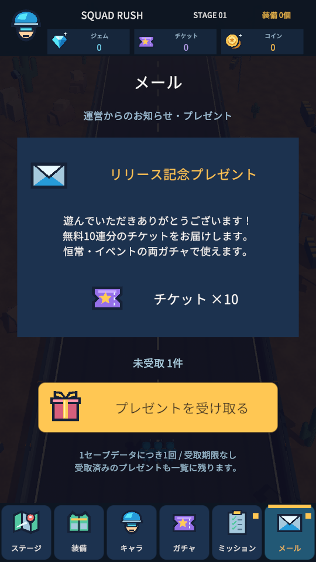
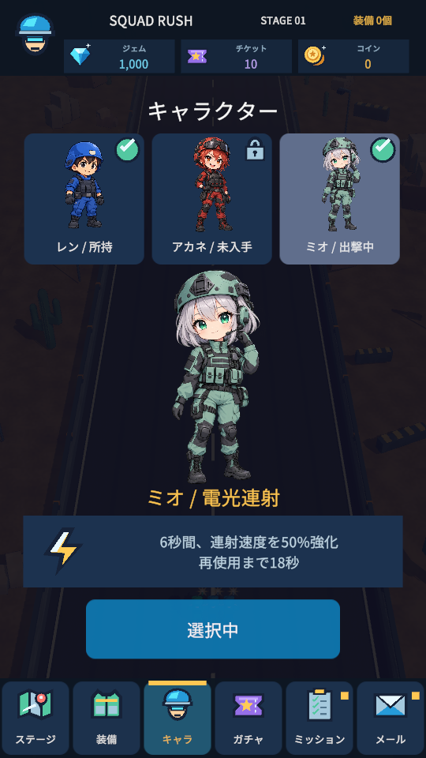
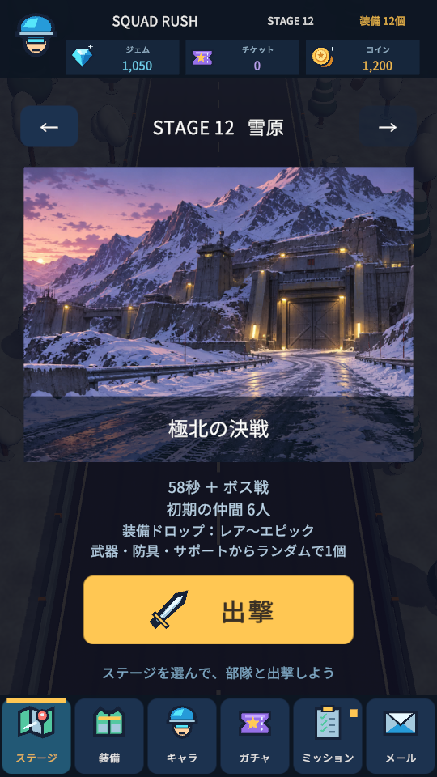
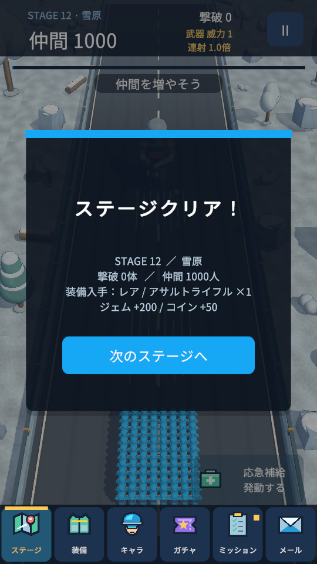

仲間と装備を育てて、
次のステージへ。
6つのタブから、目的の画面へ。
イベントガチャ「紅蓮作戦」開催。
広告・課金なし。Android 8.0以降・ARM64向け。iPhone・PCではブラウザ版で遊べます。

下のタブから、すぐに移動
ステージ・装備・キャラ・ガチャ・ミッション・メールの6タブを常設。ステージ選択は同じ画面の矢印で操作でき、別画面へのショートカットを重複して置いていません。ガチャ結果・装備詳細・戦闘中もタブを表示。一時停止後はタブで戦闘を終了して移動できます。


恒常ガチャと、イベントガチャ
イベント「紅蓮作戦」はアカネを対象にしたガチャ。恒常ではアカネ・ミオが登場します。通常の排出は基本武器またはコインで、所持済みキャラはコイン1000個に変換します。チケット1枚またはジェム100個で1回、10枚または1000個で10回。天井はそれぞれ別に保存します。
キャラタブで仲間を選択。初期キャラのレンは仲間補給、アカネは範囲攻撃、ミオは連射強化のスキルを使えます。


無料10連分は、メールで受取
リリース記念のチケット10枚は「メール」タブから受け取れます。恒常・イベントのどちらにも使用でき、受取後は下部のガチャタブで抽選へ進めます。1セーブデータにつき1回、受取期限はありません。以前受け取った方の受取状態も引き継ぎます。


ステージ12へ。強い装備を狙おう
ステージ7～12に固有の名称・目標・敵の強さを設定。12は「極北の決戦」です。クリアごとに、武器・防具・サポートから装備1個をランダム獲得。ステージ1～3はノーマル、4～6はノーマル～グッド、7～9はグッド～レア、10～12はレア～エピックが落ちます。
同じ種類・同じレアリティを3個合成して強化。装備の能力値は部隊の威力・初期人数・連射に反映します。出撃前のイメージ絵は6枚を再利用し、戦闘の景色はランダムな3D背景です。13以降も名称・絵を繰り返しながら難易度を上げて遊べます。


遊び方・対応端末
射撃は自動。指の左右ドラッグで部隊を動かし、ゲートやBOXで仲間・武器を育ててボスを倒そう。PCは左右キー・A / Dでも移動できます。仲間は最大1000人、進行と所持品は端末内に保存します。
AndroidはAPKをダウンロードしてインストール。iPhoneはSafariでブラウザ版を開いてください。Androidとブラウザの保存は別です。メールを含む報酬管理は端末内のオフライン仕様です。
ゲーム処理148件・Playモード100件、計248件を検証。スマホ実機・Safari・性能確認は未実施。iOSネイティブ版は未配布です。